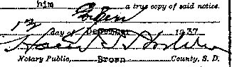
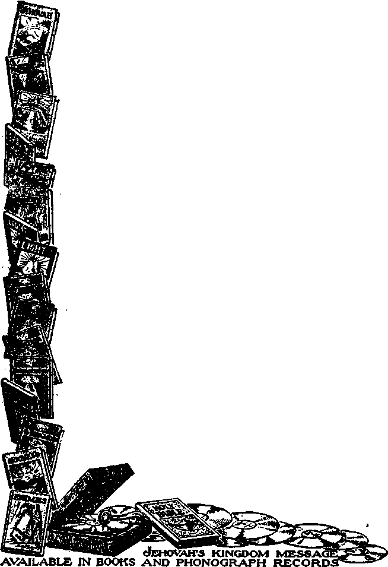

1938
Consolation
Magazine
Contents
Afghanistan—the Land Route to India *
Hierarchy Admits Jehovah Is God
Counsel by Judge Rutherford
By Trail and Stream and
Published every other Wednesday by
THE GOLDEN AGE PUBLISHING COMPANY, INC.
Ill Adams St., Brooklyn, N. V., U. S. A.
President Clayton J. Woodworth
Vico-President Nathan H. Knorr
Secretary and Treasurer Charles E. Wagner
Five Cents • Copy
fl a year In the United States fl.25 to Canada and all other countries
NOTICE TO SUBSCRIBERS
Remittances: For your own safety, remit by postal or express money order. When coin or currency is lost In the ordinary mails, there ie no redress. Remittances from countries other than those named below may be made to the Brooklyn office, but only by International postal money order.
Receipt of a new or renewal subscription will be acknowledged only when requested. Notice of Expiration Is sent with the journal one month before subscription expires. Please renew promptly to avoid Joss of copies. Send change of address direct to us rather than to the post office. Tour request should reach us at least two weeks before the date of Issue with which It is to take effect. Send your old as well as the new address. Copies will not be forwarded by the post office to your new address unless extra postage is provided by you.
Published also In Bohemian, Danish, Dutch, Finnish, French, German, Greek, Japanese, Norwegian, Polish, Portuguese. Spanish, Swedish, Hungarian, Ukrainian
OFFICES FOR OTHER COUNTRIES
England 34 Craven Terrace, London, W. 2 Canada 40 Irwin Avenue, Toronto 5, Ontario Australia 7 Beresford Road, Strathfield, N.S.W. South Africa 623 Boston House, Caps Town
Entered aa second-class matter at Brooklyn, N. T„ under the Act of March 3, 1879.
- Appetizers
Genera! Order -
• Now dot I take Austria dere iss a lull in my life, zo I take Czechoslovakia, in der meantime I take England und France. Spain iss no damn goot zo I gif it to Mooslini. Allzo I take Russia, China und Japan und fire der map dept., import und export dept., der prime minister und der ambassadors. Mooslini vjll not like dis zo I take Mooslini. Now I begin to veel ambitious, zo I take WPA, TVA, TWA, GOP, FBI, ASPCA und Grand Central Station. But dis iss only der be gin ink — Vorld, take vorning! I gif you twenty-four hours to get oudt.—Adolf uss, in New York Daily News.
Mathematics
■ I am not much of a mathematician, but I can add to man’s nervous troubles, subtract from his physical energy, multiply his aches and pains, divide his mental powers, take interest from his work and discount his chances of success.—C. I. Garette.
Sure Enough
■ A well-dressed man had sat down on a newly painted seat. Furious, he said to the painter: "Why don’t you put “Wet Paint’ on your seats?”
Painter: “That’s what I’m doing, ain’t I!” —Labor.
“Peace on Earth”
■ “Peace on earth,” was said. We sing it, And pay a million priests to bring it. After two thousand years of mass We’ve got as far as poison-gas!
—“An Observer Warns the Church,” in Harper’s.
Troubles of a Pharmacist
■ Customer: “What have you put in that prescription?”
Druggist: “I can tell that only to the doctor.”
Customer: ftBetter do it right away: by mistake I gave you my Chinese laundry ticket.”—Labor.
Not His Kind
B “Why don’t you come to our church?” said one little boy to another. “Because we belong to a different abomination,” he replied.
consolation
“And in His name shall the nations hope/’—Matthew 12:21, A.R.V.
Volume XIX
Brooklyn, N. ¥., Wednesday, June 29, 193B
Number 490
Afghanistan—the Land Route to India
AFGHANISTAN is the natural land route to India, Burma, Siam and Indo-China. It is a good route, and has been often trod since Alexander the Great chose it as a means of approach to what was the easternmost province mf the 127 ruled over by Ahasuerus in the days of Esther. See Esther 1:1; 8:9. Sometime, after the British Commonwealth of Nations has eeased to be (and that will not be long now, in view of the present machinations of the Roman Hierarchy, and the more sure Battle of Armageddon and eternal reign of Christ Jesus, earth’s new King, which follows), there will be a great highway through Afghanistan, and millions will go over it.
One can almost certainly predict one of the favorite routes. There will be a wide, capacious, well-ventilated tunnel connecting Dover and Calais. The chalk is easily dug; there are plenty of engineering firms that would guarantee to complete the job in five years. Another tunnel would be necessary at Constantinople (now Istanbul), The rest would be easy. Angora, Aleppo, Mosul, Teheran, Meshed, and Afghanistan.
The natural entrance into Afghanistan from the west is Herat. And here, to help Consolation readers, arc some comparative figures as to size. The country is somewhat more than twice the area of England, Ireland, Scotland and Wales. It is of about the size of New England and the Middle Atlantic States: Maine, New Hampshire, Vermont, Massachusetts, Rhode Island, Connecticut, New’ York, New Jersey, Delaware, Maryland, District of Columbia, Virginia and "West Virginia.
There are four principal cities, each about 400 miles distant from any of the others, set at the four corners of the country. Herat is at the west corner, Balkh at the north, Kabul at the east, Kandahar at the south. The eoun-
JUNE29, 1938
try lies diagonally along the 35th parallel of north latitude (on a parallel line with Charlotte, N. C., Chattanooga and Memphis, Little Boek, Oklahoma City and Los Angeles). India lies to the southeast, where it stretches along the 25th parallel (corresponding to Key West, Fla.) for a distance of 2,500 miles.
Sometime, after the big highway extends to Herat, it will go 365 miles to Kandahar, on the southeast corner, and then 83 miles to Chaman, India, whence there is now rail communication to every part of the Indian Empire. This railroad across Afghanistan should have been built fifty years ago. Had it been done, the entire world would have been benefited.
When Alexander came marching through' Afghanistan he found nothing to impede his progress, and there has been nothing since, except lack of the social intercourse which makes men savage and suspicious. He came in by way of Herat, thence on down to Kandahar, in the southeast. From Kandahar be could have gone on into India by the route where the British now run their railway trains, through Quetta, but he elected to first-go northeast to Kabul, which is now the capital of the country, and thence through the mountains to the west bank of the Indus. The soldiers did not wish to go farther, and Alexander stopped about where another British railway line leads from the Khyber pass to its Indian possessions.
You can believe either The Encyclopedia Americana, that the present population of Afghanistan is “estimated at 12 million” (probably wrong), or the 1938 edition of The World Almanac, that “the population is estimated at 6,330,500”.
3
The Hindu Kush mountains run the length of the country, splitting it in half. In the northeast, in the neighborhood of Kabul, they are up to 25,425 feet high (in one place), but taper down to some 4,000 feet at the west, near Herat. Herat itself, 30,000 population, is 2,500 feet above sea level, so it would not be much of a climb to put a railroad over the divide at that place.
The waters on the north side of the Hindu Kush drain off to the great sumps of central Asia, created at the time of the Flood. On the south side some small streams find their way into India, but most of the waters move to the southwest corner, into another great sump. The outlet of Afghanistan to India is principally through Kabul, the capital, and down the Kabul river, through the Khyber pass.
When the Jews came into Afghanistan, in the reign of Nebuchadnezzar, they stopped about halfway between Herat and Kandahar, in the neighborhood of what is now Zamin-dawar, where traces of them are still found. The followers of Mohammed went all the way through into India by the route Alexander took, and out of the total population of India, 351,399,880 by the last census, 77,677,545 are Moslems to this day. The Afghans are al! Moslems. The spoken languages are Persian and Pushtoo.
Kandahar, on the southeast, has 60,000 population ; Kabul, the capital, has 80,000; Balkh, north of the Hindu Kush mountains (the same as Herat) has only about 10,-000. While there are some deserts in the south, Afghanistan will sometime be a paradise; it has a marvelous climate and a great quantity of arable land that grows two crops regularly every year.
Afghanistan is a well-watered and fertile land. Wheat, barley and lentils are sown in the fall and reaped in the spring; millet, maize, beets and turnips are sown in the late spring and reaped in the autumn. As in most highlands, the fruits are abundant and excellent: apples, pears, peaches, oranges and grapes are of superior quality. Mulberries are so plentiful that, reduced to flour and baked in cakes, they form a staple food in many parts.
There are magnificent forests: eedars, pines, hazels, walnuts, willow, poplar, ash, lemons and wild vines. Rhubarb, currants, gooseber-
4
ries and similar fruits grow wild. Pistachio nuts form an article of export, and melons are exported. ■
The northern boundary of the country, separating it from Asiatic Russia, is the river ,Oxus for some 500 miles or more. The tribes on both sides of the river are the same kind of people, and closely related to each other, and hence get along quite well, despite their different governments.
As might be expected in a well-watered land, of high altitude, in the warm temperate zone, there are plenty of wild animals: bears, Jackals, hogs, monkeys, leopards, wolves, hyenas, wild dogs, wild cats, hornets of huge size, and men that are as wild and unprincipled as the silk-hatted and dress-shirted members of a board of directors of International Murderers.
The cows are humped. <‘TIumph!”«ays you. Yes; that is right. The horses are heavy-shouldered, rather short of stature. The sheep have enormous fat tails, nature’s provision for dry seasons or poor pastures, a sort of bank account, as it were, upon which the sheep may draw as long as there is anything on hand in the way of fat to be burned. Goats are valuable; their hair is long and goes to make shawls. Camels are used, but cannot work their passage in the snows that cover the land for two months in winter.
The silks made in Herat, Kandahar and Kabul are mostly used at home, but excellent carpets, soft, brilliant, durable, are woven by the women and girls, and find their way to the markets of the world as “Persian” carpets. Five-eighths of the trade with the outside world goes through India; the rest through Persia and Russia. The land is almost completely cut off from the outside world; more of this later, and why.
There is at least one hill of iron ore extending for many miles, and there may be many such. Gold, silver, copper, lead, zinc, coal, sulphur, gypsum, sal ammoniac, antimony, marble, rock salt, slate, rubies and oil have been found, and some of these deposits have been worked a little.
Disturbances of the earth’s crust are common as in other mountainous parts of the earth. In the year 1934, at a point midway between Herat on the west and Balkh on the north, the village of Patava, consisting of 150 houses, with fields and trees, was engulfed without a trace. Not a life was lost. The earth
consolation quake was preceded by a cloudburst. When the earth immediately afterwards started to tremble the inhabitants fled to the hills; they heard a terrific roar and, turning, saw their entire village disappear into the earth, which then closed down over it. For a similar event in Bible times, read the account at Numbers 16:31-33. The Khyber pass is volcanic; the lava rocks go right down to the banks of the Kabul river, with no sign of vegetation.
The Khyber pass is the main doorway from India to Afghanistan. The defile is so narrow that there is only one-way traffic, or at least that was the case some years ago; but in many parts there are nowdouble trails, so that possibly caravans may now move in both directions at the same time. As many as 120,000 loaded animals, camels, mules, horses and elephants, move through the pass annually.
The Afghans urge everybody to stay out of their country,. and have been encouraged in it. Over the pass they are hidden in stone watch towers and rocky nooks. They are provided with field glasses and rifles, and would rather shoot than eat. At the border of Afghanistan is a large sign bearing the ominous and threatening warning, “Keep out of Afghanistan.” Nevertheless, some do enter at their own risk.
There are no railroads in Afghanistan. The British come to the border at Chaman, near Quetta, but the remaining 83 miles to Kandahar has yet to be built. In 1932 there was a weekly air service connecting with Moscow, Teheran and the Indian frontier. The Germans project a line through to China via this route, aiming to avoid Russia altogether, and apparently British possessions also. Seems like a difficult route, over the Hindu Kush and the widespread heights of Tibet.
There are telephones in the larger towns; there is telegraphic communication with the principal centers, and Kabul is in wireless communication with India and eastern Europe. One of the acknowledged industries of Afghanistan is the “protection” of caravans from other tribesmen. This is one of the oldest rackets in the world. Until recently it was in full swing in New York city. The “Purgatory” racket is on that order. You pay one racketeer to keep the fellow racketeers from doing injury.
The Afghans are all said to claim that they are descended from Ishmael, or else from Afghana, a grandson of King Saul, or that they are descendants of Jewish prisoners sent into the mountains by Nebuchadnezzar. There are a few words of Jewish origin in the present Afghan language, but scholars claim that these are all traceable to the Mohammedan conquest.
Travelers have' noted the ■ extreme Jewish appearance of the Afghans, and the selfishness and cruelty that so many times go with the hooked nose. The names Ibrahim (Abraham), Ayub (Job), Yakub (Jacob), Ismail (Ishmael), Daoud (David) and Suleiman (Solomon) are common. The practice of “the avenger of blood” avenging murder is carried out as in Bible times. — Numbers 35:19-27.
The Afghans are described as being exceedingly handsome and athletic, having heavy beards and keen, inquisitive eyes that look you squarely in the face, and being unscrupulous in perjury, treacherous, vain, insatiable, and passionate in vindictiveness. Hospitality is practiced. Strangers are saluted, “May you never be tired”; to which the traveler is expected to reply, “May you ever be prosperous.” On entering a hotel the proprietor welcomes the guest, “May you ever come”; to which the guest replies, “May you ever remain master of this house.” When the guest departs he is — led to the edge of town and sent on his way with the salutation, “May God protect you.” And he needs it, in Afghanistan.
The women are exceedingly fair and handsome, and more intellectual than the average women of the East. The regular dress of the women is a black shawl thrown over their heads, and red trousers. The object of the red trousers is to prevent them from being shot by the men, who often kill other men just for the fun of killing them. Afghan children are well-treated.
Nobody would be interested in the dreary succession of wars that have drenched the soil of Afghanistan with blood throughout the centuries of intermittent Grecian, Roman and Persian rule. Its own people think of it as really a part of India, which it is, and the British authorites encourage the feeling. The most beautiful gem in the British crown, the Kohinoor diamond, was carried off from India, through Afghanistan, to Persia in 1739. It got back to India and was grabbed by the East India Company in 1849. The Company gave it to Queen Victoria; but please don’t think it was an unprofitable move on their part. The history of Afghanistan as a country separate and apart from Persia dates from about the year 1747, when the Durrani, the present reigning family, came into control. And now for a few words about some of these:
Nadir Shah, himself a Turkoman bandit, overran Persia and Afghanistan and was assassinated just as he was returning from India, laden with the huge spoils of conquest, from the sack of the city of Delhi and the massacre of its inhabitants. One of his cavalry generals, Sardar Ahmad Khan, raced back to the booty, seized it and proclaimed himself ruler. He held the job from 1747 to 1773, when his son Timur put him out. Timur continued until 1793. Ahmad died of a loathsome disease; Timur lacked his ability, and the kingdom shrank to its present size.
The next really capable amir (military ruler) was Dost Muhammad Khan, who died on the field of battle in May, 1863, at the age of 76. Styled by the Afghans the “Great Amir”, Amiri Kabir, he reigned 37 years without introducing a single measure of general benefit to the country, but the Afghans admired him for his intrepid courage, vigor, simple manners, free hospitality, rough-and-ready justice and free accessibility to all.
The next one worthy of note was Abdurrahman, who reigned for 21 years, dying in 1901. A British engineer was visiting him in Kabul, and both were eating ice cream, when 400 mutinous soldiers from Herat were marched in. The amir ordered their eyes poked out, and it was done then and there. He had an official babu-ji or eye-blinder attached to his court. The engineer did not finish his ice cream, but Abdurrahman went on and gulped his down with a relish.
Trying to make his country safe for travel Abdurrahman showed incredible cruelty, even for a Moslem. On one occasion a British officer, alighting from his horse to drink, hung his belt on a tree and rode away, without it. On his return a man in the neighborhood produced it and handed it to him. The officer was so pleased at the man’s honesty that he asked him to come to Kabul and meet the amir, who would suitably reward him. When the story was told to the amir he smiled and asked the finder of the belt which hand he had used. He said the right, whereupon the amir roared, “Cut it off! How often have I told you Afghans not to touch other people’s things?”
When a woman came to him complaining that her husband had no teeth, and for that reason she wanted a separation from him, the amir ordered all her teeth knocked out, so that she could have no cause for complaint.
Abdurrahman knew that he was a hard man among a hard people. lie left advice to his successors to introduce reforms, but to do it gradually, as the people could bear them. He regarded all politicians, of whatever power, as pickpockets and robbers, and did not miss it much.
Amanullah, who came to the throne February 20, 1919, tried to reform Afghanistan in all things overnight, the same as Kemal Ataturk reformed Turkey, but he did not quite make the grade. His wife Souriya, herself the daughter of a queen, is one of the most beautiful women whose pictures have appeared in western papers. She also was progressive, and between the two of them they lost their job. Here is how it all happened.
December 11,1927, their royal train of white and gold cars pulled in at the railway station in Karachi, India, and immediately the royal party took the breath and engaged the reporter i al atte.ntion of the world. Contrary to all precedent, they were to make a royal trip to Europe; and doubly contraiy to all expectations, when the ladies alighted, instead of being togged out with Afghan costumes they were all dressed in the latest Parisian styles, with short skirts, silk stockings, patent leather shoes and everything else to match.
The reporters described Souriya as “very beautiful, with black, dancing eyes, delicate features, smiling lips and a clear white skin”, which is enough of itself to twist the neck of most men, and then followed it up with allur
ing statements about the accompanying princesses and the great hit they had all made.
On January 8, 1928, Amanullah landed in Rome with a military uniform of sky blue covered with military decorations, a sword with a jewel-studded hilt, and a black shako topped with a waving aigrette. Like Mussolini, he put King Victor completely in the shade.
January 12, being a Mohammedan, he called on the pope, who bestowed upon him the Order of the Gold Spur, The papers raved about him ’ as being an accomplished mathematician, lawyer, journalist, real estate agent, mineralogist, economist and authority on men’s dress, a worker, a disciplinarian, a hater of graft, a Fascist determined to Europeanize his country, and one who up to two months previous had never even seen a steamship.
At Rome the women in the party undressed —er, that is to say, they laid aside their veils and settled down to enjoying western clothes, decollette. About this time Lord Birkenhead, who knew something about Moslem customs, warned Amanullah, in a friendly way, not to bite off more than he could chew. Amanullah missed it that he did not listen to him more attentively.
On January 24 the amir and his queen arrived in Paris in the special car attached to the Blue train. February 12 the king cut into a carbuncle while he was shaving in Belgium. Ouch 1 While she was at Brussels Queen Sou-riya admitted that she had spent £3,200 for frocks alone for the trip, and it was estimated that the entire tour would cost the royal couple a matter of not. less than £180,000, and possibly more. Meantime all this was going back to Afghanistan and getting in the papers. More Ouch! Also, Amanullah admitted that he had but one wife but could and did afford 50 automobiles. Still more Ouch!
On February 22 the amir landed in Berlin clad in a pale-blue dolman richly embroidered in gold, gold-lined trousers, and scarlet trousers at that (just what’s the big idea?), and that same black shako with those same white feathers. He could not have looked more, perfectly sweet if he had been a cardinal, or some-■ thing like that. Old Mr. Hindenburg was there and presented Souriya with a bunch of orchids. Beside her Amanullah he looked like an old weather-beaten telegraph pole in front of a bovrer of roses. The Hitler foolishness had not yet begun.
While he was in Germany Amanullah ae-J UNE 29,1938 cepted as a free gift a three-motor, all-metal, ten-passenger Junkers plane, and Souriya was decked out with three toilet tables in mahogany, with silver trimmings, and a shoe firm sent her 100 pairs of shoes and asked her to pick out the 20 pairs she liked best, and they would just charge it to profit and loss.
The amir and his bride landed in London in an inky-black fog, and Amanullah was delighted ; he had always wanted to see one. He was given an address of welcome, presented in a gold casket. That was March 13. Time was slipping, and about this time Souriya’s father heard tidings out of the East thfrt troubled him and he beat it back to Afghanistan; but the movie men got there ahead. Alack, amir! and alas, Amanullah!
Britain bent jto the load. At the official banquet the prince of Wales was present, and K* was the archbishop of Canterbury. Thoee two gents had not yet locked horns over the Baltimore lady that marries whomever and whenever she will. The archbishop was not at that time all heated up over saving the church of Heni^y VIII from marriage scandals.; all he was intent upon was just in showing this Moslem that, as a good Episcopalian, he was for him as king of Afghanistan.
At night the two queens were at the theater side by side. It was a good hand. Amanullah held one of the queens and Mary’s hubby (Who was that? George?) held the other. Two kings and two, queens. Amanullah distinguished himself by a twenty-two-mile trip in a submarine. He was permitted to fire two torpedoes at a British target ship and to send it to the bottom. He was entertained by seeing a thirty-eight-ton tank crash through a model fort in a cloud of dust and flying earthworks. Ten thousand rounds of machine-gun bullets were fired, and aircraft engaged in mimic battle, all for his benefit.
Amanullah flew over London. He gave away tips of £100.
April 11 he was back in Berlin and had his tonsils removed.
May 22 he was in Angora, Turkey, on his way home, and still receiving presents galore, rugs, jewels, Angora kittens and what not. He motored home via Persia.
June 21 he was back in Afghanistan and decreed prohibition throughout his realm.
July 26 he announced that a parliament would be summoned; and made a declaration against polygamy.
September 3 he decreed universal suffrage, abolished all titles and ranks, and forbade the wearing of foreign decorations.
Four days later it was announced that negotiations for building three railroads were in progress with German and French companies. When the parliament was assembled the king had the tribesmen shaved of their whiskers and dressed in frock coats and felt hats, to replace their flowing robes, turbans, rope shoes and voluminous waistbands. Parliament had to sit on benches and chairs instead of crosslegged on the ground. The queen appeared in the streets unveiled.
By the end of October Amaiiullah was hedging a little. Far from expending $900,000 on the trip (as estimated when at Belgium), it had cost a mere $75,000, which is a big shrinkage in six months. And then he had received presents of the value of $22,500,000; which is not to be sneezed at. Every dollar invested had brought back $300. He went on with his reforms. Newspapers were increased from one to fifteen; colleges were being built at Kabul and Kandahar; airdromes were being built; airplanes were bought; many young men were sent to Baku to learn how to work oil deposits; others were sent to Europe to learn all kinds of things.
By December 1 the priests had aroused the whole country against the reforms. They saw some of their money slipping away into the education of young men and young women; it would never do. Amanullah was accused of not paying his army. He became a virtual prisoner in Kabul. Airplanes took all European women and children out of the country, sixty-eight from Kabul alone. '
Amanullah followed, and by September of the following year he and Souriya were Boman Catholics, and living near the Vatican, in Italy. It is claimed that on his first trip he brought out $12,000,000 in jewels and $25,000,000 in gold, which he increased to a total of $50,000,000 by wisely directed betting in the stock market. Moscow and Paris officials accused the British of being at the back of Amanullah’s overthrow; he was, they thought, pushing reforms too fast; they did not wish to see railroad lines across Afghanistan.
Baek in January, 1929, Amanullah rescinded all reforms and promised to be a good Af-, ghan thereafter; but he was too late. The mad mullahs had beat him to it. On his way out of the country, after his escape by airplane, Amanullah claimed he had only $30 left in his pocket; he is described as weeping bitterly over his fate, and Souriya the queen also looked dejected. The jewelry taken on the final trip was insured on the boat for £11,050, On his return to Europe he was arrested by Swiss police, who mistook him for a burglar when they found him climbing through the window of a villa which belonged to him.
The priests’ tool in the overthrow of Ama-nullah was Bacha Sakau, a brigand. This man offered his services, and Amanullah accepted them some hesitation. Bacha was made a colonel in the army, given guns and ammunition and men. Suddenly he turned traitor, proclaimed himself the new king, and in no time he and Amanullah were each setting a price on the other’s head.
Bacha seized the government, calling himself Habibullah Khan. Habibullah means “darling of God”. He lasted ten months, when he was both hanged and shot, or shot and hanged.
After him came Nadir Khan, Amanullah’s uncle. Amanullah wanted to represent him and his government at Rome, but the offey was not enthusiastically received. Nadir resorted to old approved Afghan methods of blowing condemned criminals from the cannon’s mouth. When some of his subjects incorrectly reported conditions in the south of the country, Im compelled them to walk a thousand miles so that they might see for themselves that the conditions were not as they had represented them. They were accompanied by guards bearing placards specifying the nature of their crime and the punishment imposed. '
Nadir lasted four years, when he was assassinated by a man whom he had previously pardoned for some minor crime. He was succeeded by Zahir Shah, his son, the present ruler. After Nadir’s death the assassin was put to death,'together with all his male relatives and some of his acquaintances, 29 in all. Such are the ways of the Afghans. God’s kingdom will change it all and make the land a paradise, and the people will get to know the truth and many of them will walk in it and rejoice before the Lord for ever. Hail the glad day!
The Afghans are bad actors with guns and knives, as many have found to their cost. Sentries hail and fire simultaneously. Every European of any standing is expected to hire a chokidar, or watchman. Four Europeans in (one house may have four different chokidars watching them and watching one another.
When an Afghan’s suspicions are aroused he shoots or knifes first and inquires afterward. Europeans had better not walk around after dark. If they have weapons they had best be kept out of sight, as otherwise they would be stolen. Religious fanatics among the Moslems are liable to take life at any time of those whom they esteem unbelievers. Every Afghan carries a rifle from early childhood, and knows how to use it, too.
“lt suits Biiiish polities well to have a fierce, warlike, well-armed people occupying an apparently independent state cm the land route to India.”
You have probably read Kipling’s story of “The Man Who Would Be King”. It describes life among the Afghans. The tribes of the country are but thinly held together, with rival interests and little or no intermarriage. It is exceedingly dangerous and difficult to do any camera work in Afghanistan; but some has been done.
It is not pleasant to travel in a land where one may see a prisoner standing in an upright position with his ears spiked to a door. The wilder tribesmen have been known, on capturing other tribesmen, to boil them in oil, and that within the past ten years.
Only a few years ago a German professor rode thr ough the Khyber pass on a motorcycle. Once in Afghan istan a mounted Afghan tried to keep up with the machine, whereupon his pony threw him to the ground, leaving him senseless. The German stopped to aid him. As soon as the Afghan came to he tried to rob his helper and was about to use his rifle. In a llfe-and-death struggle the German shot and killed him and hastened on to Kabul to explain it all to the German minister. He was thrown into prison for months and barely escaped with his life. As late as 1924 there were processions of heads on spears.
Story - telling is popular; there are some phonographs playing Eastern airs; and there are a very few movies. But for the most part the women have no
entertainment of any kind, except the routine of marriages, funerals, births and naming of children. In the cities there are conjurers and troubadours. In the cities also are pipe boys that for one pie, equal to about one-sixth of a cent, will permit a half dozen puffs on a pipe.
British influence is all-powerful in Afghanistan. It suits British politics well to have a fierce, warlike, well-armed people occupying an apparently independent state on the land route to India. It suits so well that when King Nadir Shah (already mentioned) came into power the British government loaned him £175,000 without interest and 10,000 rifles and 500,000 cartridges, without stipulations of any kind, secret or open.
The British had wars with Afghanistan in 1838, 1878, 1880 and 1919. British historians have described the war of 1838 as an “unhallowed, unrighteous and causeless war”. They ought to know. The Afghans on that occasion completely annihilated an army of 5,000 men and 12,000 camp followers. Only one man, a physician, escaped. Of course, the British squared the account subsequently. There were other invasions of Afghanistan by British troops in 1878, 1880 and 1919. These invasions were to keep away the Russians or the Persians, so that Afghanistan might continue to stand as a buffer state.
JUNE 29,1938
In the aggregate Britain has given the amir of Afghanistan free gifts of a half million sterling, 30,000 muskets, two batteries of rifled artillery with their munitions, and has trained instructors and officers for the amir’s army. It has provided him with skilled artisans for his ammunition fa ctor es.
Up until 1927 Afghanistan followed a policy of nonintercourse with any European nations whatever, and it was not a half bad policy from a purely Afghan viewpoint, speaking only in a political sense. As far as the Afghan people are concerned, however, it was a great error, and held back civilization. The first Afghan “consul of career” was appointed to the city of Karachi, India, in 1927; Afghanistan joined the'Postal Union in 1928; joined the League of Nations in 1934; received the first American ambassador in 1935.
The curse of Afghanistan, as of all the rest of the world, is religion—the blind adoration of men instead of devotion to the true and loving Creator, Jehovah God. The priests have encouraged blind fanaticism to such an extent that they sometimes get paid in their own coin. Thus, it is not altogether unusual for a community to deliberately murder its local priest so as to have an excuse for setting up a shrine to his memory, with the resultant traffic in pilgrims. .
A very good idea of the Moslem religion, and of the risks that modern cameramen are willing to take for the sake of getting something new for the movies, is the following paragraph from the work Living East, published in 1929: .
Thomas had disappeared inside the Mosque where the service was going on, so I followed after him. All three of us had borrowed astrakhan fezzes tlqe night before, and we were so sunburned that by merely donning this local headgear we passed for young Turks. By this simple disguise, we not only reduced the risk of being attacked by a fanatic, but also by watching and imitating Naim-Shah’s method of praying were we able to enter the Mosque and secretly take pictures. I have rarely seen a more impressive sight. Imagine an enormous field, with here and there a cherry or peach tree. The whole enclosed by white walls arid at one end a raised platform, with Moorish arched niches at the baek along the wall. Here the Mullahs stood and exhorted the faithful in powerful ringing voices. In front, arranged in orderly rows, were some two or three thousand devout Mussulmans. "Allah il Allah, Mohammed razoule,” chanted the Mullahs, and the response of the thousands was like the booming of breakers on a beach after a storm. They stood, knelt and prostrated themselves in unison, till one could feel the thrill of fanatical fervor run through the crowds like an electric current. Nevertheless, I left with a feeling of relief, for I couldn’t help imagining the scene if those stark fanatics should discover our presence in the Mosque. Three infidels, but worse still, infidels with cameras. An invention of the Devil, which the more ignorant Mohainmed-ans believe capable of stealing their souls. Yes, the air was certainly better in the street outside.
The Devil uses his faithful children, the Moslem priests, to perpetuate his great lie that the dead are not dead, and so every Moslem, when passing a cemetery, is supposed to lift up his voice and cry “As Salaam alaicoon, ahl-i-Kabdol 1” (“Peace be with you, O dwellers in the tomb I”) The men’s gravestones stand thin and upright by head and foot; and the women’s stones, broad and flat. By the shrines strips of rags, tied by the pilgrims, flutter in the breeze. The Roman Hierarchy’s arrangement is a better financial scheme; for, instead of inexpensive rags, the people have to buy candles, at a good profit to the candle salesman, the priest.
The Afghans have some unusual conveniences for corpses. The grave is dug down several feet, and then a ledge is scooped on one side, on which the corpse is laid, with room to sit up at the day of resurrection, and also room for the cross-questioning angel to sit and make inquiry. It is of no use for you to laugh at this nonsense if you were ever fool enough to swallow the “Purgatory” or the worse “hell-fire-and-da in nation” religious nutrition of the recent past. How happy all sensible people will be when the pure and beautiful and lovely truth of God’s Word shines into every comer of what is still a dark world! ’
The priests are always willing to start a jehad, or “holy war”, if they see their revenues falling off. Priests are like that. Anything that interferes with their business of fleecing and blinding the people is the counterpart of what the Hierarchy now calls “Communism”, i.e., anything that they feel sure is liable to decrease their takings. And so, in Afghanistan, the hills are liable to resound at any time with the old familiar cry that the priests and preachers of “Christendom” put up in 1914-1918, “Glory for all, and heaven for those who bleed.” “What fools these mortals be 1”
♦ Many will be interested in the admission by the Roman Catholic Hierarchy thpt they know that Jehovah is the one and only true and living God. Yet they have never told this to the Catholic population.1 The admissions were wrung from the Hierarchy by correspondence originating with Engracio Alin-sod, now a house-to-house witness for Jehovah in Manila. On December 9, 1935, he wrote to the Right Reverend The Archbishop of Manila a letter from which the following extracts are taken: ' •
Amidst rejoicing for the expected return of our Lord Jesus Christ the bombs of Satan frequently explode here and there because he knows that his time is short. On page 820 of The Golden Age [now Consolation] magazine of Brooklyn, New York, Vol. XVI, Serial No. 418, dated September 25, 1935, a Roman Catholic priest is quoted as saying: “If the people would stick together, they could defeat Jehovah.”
A number of days has already elapsed and yet the Catholies as a great Christian organization have been silent. This seems to show that your mission is dead. The remnant people of God’s organization on earth who are devoted to Jehovah will relentlessly expose your hypocrisy and tricks. The Catholic catechism omits in bad faith the name of Jehovah. Even in your sermons and glorification of divine power and entity Jehovah is least spoken of, although you know he is the greatest of all. And still not content with the offense, He, Jehovah, the Great God of the Universe, is relentlessly blasphemed.
Please declare publicly, fearlessly and openly whether or not you recognize Jehovah as God, Prepare. The Battle of Armageddon is at hand. Shame on him who says that Jehovah can be defeated. Who are we? Are wc not a mere dust? He who can not acknowledge Jehovah openly as God is a hypocrite and should hide his face in the coming Battle of Armageddon which is now visible to human eyes.
In his letter to the archbishop Mr. Almsod explained that he had formerly been a most humble follower, and accompanied it with the warnings: “You will see that the issue can not be ignored. We are for God or for Satan. We cannot be neutral/’ and, “The hypocrites will have a frail stand, as they wiL be silenced ignominiously.’’ The letter produced results. In three days the Reverend Wm. A. Fletcher, secretary to the archbishop, wrote to Mr. Al-insod:
In reply to your letter of December 9, allow me to state that some 23,000,000 Roman Catholics in the United States, and about 9,000,000 Roman Catholics in the Philippines as well as millions of other Catholics throughout the world, adore and worship Jehovah, which is another name for the One, True God.
But the Scriptures state, “In vain they do worship me, teaching for doctrines the commandments of men.”—Matthew 15: 9.
♦ The bones of what may have been a Gibbor who lived before the Flood were found November 13, 1937, near Semipalatinsk, Kazakistan, one of the Soviet republics in Asia. There were ten feet of gravel over the skeleton, washed there by the Flood. This particular giant, however, was not drowned in the Flood, as were most of his comrades; for in his skull was stuck a sword. The joints and feet were one and one-half times the size of present-day humans, confirming all that is known of the Gibborim, whose fathers were angelic sons of God, and whose mothers were humans'in those days when “the earth was filled with violence” (Genesis 6:4,5,11-13), while Noah and his sons were building the ark. Now, as then, violence is everywhere, “and as it was in the days of No'e, so shall it be also in the days of the Son of man.”—Luke 17: 26. ■
♦ Protection rackets, of which that of “Purgatory” is an outstanding example, are now being worked jn the Far East. Chinese secret societies have caught on to the racketeering methods practiced so successfully in New York and are now protecting all kinds of business for a consideration. Restaurants are protected by hundreds of men going in and sitting all day over a penny cup of coffee, leaving no room for other customers. After a few days the proprietor of the shop is willing to join up and pay the protection fee demanded.
11
Jehovah’s Kingdom publishers at Manila, Philippine Islands; and their printing plant at Tokyo branch
CONSOLATION
with not a sign of life anywhere. In the period in which the mountain was forming 750 women and children were taken to safety. It is estimated that 250 died, buried beneath the pumice and ashes.
Mountain Created in Two Weeks ♦ At Rabaul, British New Guinea, a volcano erupted and in place of a beautiful garden, only a few feet out of the water, a mountain rose in two weeks to a height of 850 feet,
War whoops up business, and it matters not much where the war may be. If Japan is buying all the iron it can get its hands on, the result is big business in Pittsburgh,
Johnstown and Bethlehem. The pay rolls of the steel industry in the United States in 1937 were $976,000,000, the largest ever known.
Appropriations ♦ The national defense bill for the fiscal year beginning July 1,1936, was over $1,000,000,000, and the largest peacetime appropriation in history. The United States is at peace with every country in the world, but the munition makers felt that it was high time they had some swag.
SuveCJ
Bombers Costing over $135,000 Each ♦ The United States Navy’s new bombers, costing over $135,000 each, are each designed to carry six men, and are the fastest and therefore the deadliest bombers 'ever built. The Navy, which now has 1,000 planes, plans to have 2,000 by 1941.
♦ The Japanese sinking of the United States gunboat Panay served more purposes than merely showing again how perfectly indifferent is the Japanese army to what it does to the boats or lives of the citizens of other countries. It brought out the statement of Robert Fechner, national Civilian Conservation Corps director, that the 2,300,000 youths trained in the CCC camps are about 85 percent prepared for military life and can be turned into soldiers at a moment’s notice. That was known all along, and it is only common sense to admit the truth.
Seventeen Million Boys Murdered
♦ Seventeen million boys were murdered by the International Murderers in the World Foolishness of 1914-1918. Zaharoff, master armament salesman, would gladly have seen many more millions slain. Twenty-one million more boys were hospitalized, and twenty-seven million more boys had their home and family arrangements disordered so that they might participate. One out of every four Germansmobilized lost his life. Ninety percent of all Austrians became casualties, 73 percent of all Frenchmen, 65 percent of all Germans, 39 percent of all Italians, 36 percent of all British, and 35 percent of all Belgians.
Getting Uncle Sam Ready
♦ Not having learned anything from the World War, all the nations are eager to prove yet once again the fallacy of the argument, “In time of peace prepare for war.” They expect to do this by the eentu-ries-old plan of putting as much as possible into armament. Uncle Sam is leading in this campaign of foolishness. The munition makers will get a good hunk of the $545,146,506; they are so patriotic, you know. And, besides, Uncle Sam has money to throw away. Anyway, he is throwing it.
War an Expensive Process
♦ It is calculated that ammunition of all kinds averages to cost about 50c per pound, or $1,000 per ton, and that an army of six divisions (150,000 men) would shoot at least $2,000,000 out of existence every day of active fighting. The World War cost an estimated $190,000,-000,000, with interruptions to trade and property losses running to a total of $340,000,-000,000.
JUNE 29, 1938
13
One of the dressmakers’ notes explains, under a Vatican City date line:
The Pope entered St. Peter’s in full pontifical robes with the triregnum, or
triple crown, on his head and his body enveloped in a magnificent cloak of a delicate shade of ivory embroidered with gold, which fell from bis shoul-decs to his feet. Behind his head two fiabejli, or semi-circular ostrich feather fans mounted on high poles, were carried aloft by purple-elad attendants. Twenty-seven Cardinals, resplendent in their scarlet robes and long purple cloaks, whose trains were supported by acolytes in violet, opened the papal procession, which blazed with the colorful uniforms and rich gowns of church dignitaries.
It should be added, to make the story complete, that this is all the Roman Catholic population get for their money; every last thing. They get no truth; none whatever. All they get is a cheap one-ring circus, and the exhibits in the side show are not worth going across the road to see.
♦ The Scriptures say of Satan that he is making it specially hot for mankind because he was cast out of heaven, “having great wrath, because he knoweth that he hath but a short time.” (Revelation 12:12) The Roman Hierarchy knows nothing of this, and therefore blames present evil conditions upon God instead, thus, as usual, doing all possible to dishonor His name. The “General intention for March, 1934, recommended by His Holiness, Pope Pius XI,” contains the following: “Let us pray, then, for all who are unable to obtain employment, that they may patiently accept their sad condition as an affliction from the hand of God.” Their affliction is from “god”, to be sure, but “the god of this world”, the Devil.
♦ Sick of the job of being a pope, Celestine abdicated, being encouraged to do so by Cardinal Gaetani, who thereupon had himself elected in his place as Boniface VIII. As soon as Boniface VIII had got his job away from the old gentleman, he imprisoned him in a small room in the castle of Fumoni, where he died nine months later. He is now a Roman Catholic “saint”.
The Liberty to Exercise Tyranny
♦ The liberty of the Papal organization is that the pope should be free, in his own name, to settle matters of faith, to impose his teaching on all, even by force, if necessary (Syllabus, Article 24); the pope should be free, not only not to allow any other church to exist except his own (Art. 77), but to stifle in his own (Art. 15) any striving after free and individual faith; all education should be free to pass entirely into the hands of the priests (Art. 45); the pope should be free to legislate in a sovereign manner (Arts. 68 and 69) on all matters relating to marriage—the core of civil life—to maintain for an indefinite period (Art. 43) all the concordats that have acknowledged his rights, and, above all, to require of every Christian ruler to place his authority at the service of all these liberties. —Terance Ma go wan, in The Monitor, citing as his authority the Syllabus of Pope Pius IX, published in New York city in 1912 and carrying the imprimatur of Cardinal Farley.
♦ The 120 Swiss Guards, supposed to protect the person of the pope, are reported as sore because they have to work 40 years instead of 25, to get a pension. Guards must be native Swiss Catholics, of legitimate birth, unmarried, healthy, at least 5 feet 8 inches tall, and are not accepted after reaching 25 years. The uniform, designed in derision by Michael Angelo, is as near that of the cap and bell suits of court jesters of the Middle Ages as Michael dared to make it. Angelo thought it foolish for a person pretending to be the Vic^r of Christ to have a bodyguard of carnal soldiery.
♦ Nothing that issues from the Vatican can be believed. This is well understood among newspaper correspondents. And so the statement of the Associated Press that the pope had ordered Chinese Roman Catholics to back up Japan may not be true. But the denial of the report may not be true either, The chances are that the report was correct, and that somebody at the Vatican let out something that, on mature consideration, it was thought best to keep secret. So the “best way to do” was to deny it. The A.F. says it’s true.
THIS past winter I have been in the homes of many people. In the cities many were irritable, sleepy-eyed, perhaps somewhat grouchy; while in the country, as a rule, I found the people more cheerful, ready to shout, “Get out and come in,” when my car drove up. Nor did I have to look far to find the reason for the difference. The houses in the cities are tighter, in faet, almost too tight; and they are heated usually by natural gas.
What has that to do with it? Just this: Those houses, as I stated above, are almost air-tight, and the gas stoves burn all the oxygen out of the air, to be replaced with the unburned portion of the gas. That is not good to breathe. The smell is enough to make one sick, when one who has been in the fresh air steps through one of those tight doors. -
I will state here that I am not a doctor. I do not know what that unburned gas is, nor what is its exact effect on the human organism. But one can judge from experience what it is that harms him.
I do not have gas in my home; so am not inured to its poison. After working in a town some distance from home I go to the house of one of the friends for a few minutes’ rest. In ten minutes my head is aching from the gas fumes. It is not from heat; for a gas stove never makes that much heat. This headache will last for several hours.
Some people are chronically sick. They are unable to keep warm, and therefore keep their gas heaters turned up every cool spell. Of course, everyone with gas has a gas cookstove.
I do not believe that a gas stove would be at all harmful if used with proper caution. Ventilation should be provided by placing the stove in a fireplace with a small flue. Also water should be placed so as to evaporate and provide proper moisture. This is important, as lack of moisture will produce a headache almost as quickly as will gas fumes.
Anyone who so desires and who is equipped may prove whether these observations are true or not. The need of scientific investigation is great. Some of the money the government is giving away so recklessly might be diverted to this purpose, with some good results to the people.—Frank Wallace, Texas.
SAUERKRAUT, favorite dish in many homes and affront to olfactory sensibilities in others, has acquired a new prominence among foodstuffs as the result of an address recently delivered before the convention of the International Stewards association in Chicago.
Long considered the poor man’s dish, sauerkraut came to attention as a healthful vegetable and a medicine when Louis Pasteur referred to it as the greatest conditioner on the face of the earth. Medical authorities have since declared that it is actually and effectively a cure for human ills from colic to headaches—a sort of vegetable panacea.
The precedent of beans and bran biscuits in wholesome diet foods, the companion food of wieners and spareribs is now recognized as a direct cure and is given first place among cures for diabetes. It is also given place as a beauty aid for women, a blood purifier and a remedy for indigestion and dyspepsia.
The kraut keg has also been advised for misbehaving livers and kidneys, creaky joints and rheumatism. Russia's leading medical authority says: “Sauerkraut juice is nature’s own best medicine for disorders of the stomach and intestines. It is the greatest cleanser in the whole catagory of foods,” It is the principal item in Russian military rations, 122 ounces being given to each soldier each week.
Why sauerkraut as a cure-all! The famous Elie Metchinkoff, of the Faria Institute, an-, swers. Lactic acid bacilli, the germs which destroy poisons in our systems, thrive in sauerkraut. They are the strongest and most energetic of the helpful bacilli.
With such qualifications to give it claim to a place in the daily diet, this plebeian food appears destined to come out of kitchens and covered servings to a place of distinction on the dinner table. Even family bars have given place to sauerkraut juice for the popular sauerkraut cocktail.—Mrs. C. E. A. Datisman.
HIn the seven years from 1929 to 1936 the number of employees of the American Telephone and Telegraph Company fell from 456,682 to 294,362. In other words, in that time the A. T. & T. put 162,320 persons on the “dole”. Oh, no, not on the A. T. & T. dole, in any sense of the word, but they shoved them over on the public as unemployed and said to Uncle Sam, “Here, you take care of them.” In the same period A. T. & T. wages paid fell from $676,543,312 to $475,000,000. And in the same period A. T, & T. dividends rose from $116,378,371 to $168,081,179. The reason for giving the $51,702,808 additional in dividends to the stockholders was that they could buy handkerchiefs in which to cry over the hard luck of the 162,320 persons that lost their jobs and didn’t have anything at all. You see, by that means they were able to buy $318.52 worth of handkerchiefs for each person fired; and think of all the sorrow that represents when each handkerchief is filled full of tears!
The Three Backward Countries
♦ The three backward countries, United States, China and Ecuador, are the only countries which do not own and operate either their telephone or telegraph systems. American “statesmen” are afraid of offending the American Telegraph and Telephone Company, and, besides, most of them hold a good-sized block of A. T. & T. stock. Nevertheless, on seventeen occasions committees of Congress have recommended public ownership of these necessities. The average rate paid in the United States for telegraph messages is three times as high as in countries under public ownership.
The Big Money in Utilities
♦ The big money in public utilities is shown by the fact that in Washington, D. C., where the rates have been kept down by Congress to 3.9 cents per kilowatt-hour, the company’s profits in twelve years came to over $60,000,000. At times the profits came to 60 percent of the cash invested in the business. Now you know why the dear public are encouraged to invest in pavements, bridges and sewers, which bring no income, and are nothing but an expense, but are solemnly warned by highly paid men (paid out of funds contributed by the public) that on no account must the public ever own public utilities that have incomes attached to them. Thus, it is all right for the public to own and pay for sewers and their upkeep, but what a terrible thing it is for them to own power plants and electric wires 1
♦ Following the practice being gradually carried on all over the world, the telephone trust has put in automatic exchanges at Toronto to do the work of the telephone girls, who have been sent home to rest perpetually from their arduous labors. One can imagine the joy that fills the hearts of the trust that they have been able to do this, and how gladly indeed they will reduce the charges to their customers because of it, and how gladly also they will cheerfully pay huge taxes so that they may contribute their full share to the support of these girls deprived of their means of livelihood. Burp!
♦ The officer who sits on the grapnel rope of a cable repair ship has an important job. When the break in the cable is located with precision by means of electricity, Ijhe vessel steams to the spot and grapples for the cable. The officer, sitting on the grapnel rope, tells by the feel of the rope whether the grapnel has eaught an obstruction or the cable sought. Modern cables weigh 33 tons to the mile. The repair ships mend about one break a week, on the average. The fall season is the worst for breaks.
♦ Telephone engineers, by splitting the sound channels, are now able to send 240 separate telephonic conversations at once on a copper wire about the size of the lead in a lead pencil. A little while ago it would have required a copper wire as large as a man’s arm to render such a telephone service.
♦ Telephone service between the United States and China has been regularly established, and the day draws closer and closer when anybody, anywhere on earth, may talk with any other person on earth.
JEHOVAH GOD created the earth for righteous man and created man for the earth. (Isaiah 45:12,18) Before the righteous man had produced children he joined the Devil in a rebellion against God and became unrighteous. The result was that all of Adam’s children were born sinners, that is to say, imperfect. Adam was condemned to death and died, and all of the human race have inherited imperfection and therefore death. (Romans 5:12) The Devil then challenged God to put on earth any man that would remain true to God. Accepting the challenge, Jehovah God gave His word that in due time He would raise up a government, under Christ Jesus; that Christ Jesus should first redeem the race, and then all who obeyed Him should be brought to the point of righteousness; that under the new government men would be furnished the opportunity of obeying the Lord and living for ever on the earth. God’s purpose cannot be defeated, and in due time the earth shall be inhabited by a righteous race. Before this, however, Jehovah God first takes out a class of men “for his name” who prove their integrity by their faithfulness (Acts 15:14), and these are joined with Christ Jesus in His royai house. The Devil set up religion and religious organizations to turn men away from God and to thus carry out his challenge. From the beginning till now religion has formed a part of all the governments and nations that have existed on the earth, because Satan is “the god of this world” and has seen to it that religion has taken a prominent part.
Jehovah God made Christ Jesus the King of the world with full right to rule, and the time for His government of righteousness has now come. All Christians are on the side of Jehovah God and Christ, and these are the ones that have the promise of being a part of the heavenly family. The Scriptures show that the Devil, under the cloak of religion, has drawn the rulers of the world into a con-
JUNE 29,1938
spiracy against God and against His anointed King and the King’s faithful followers; and on this point the Scriptures read: “The kings of the earth set themselves, and the rulers take counsel together, against the Lord, and against his anointed, saying, Let us break their bands asunder, and east away their cords from us.” (Psalm 2:2,3) “For, lo, thine enemies make a tumult; and they that hate thee have lifted up the head. They have taken crafty counsel against thy people, and consulted against thy hidden ones. They have said, Come, and let us cut them off from being a nation; that the name of Israel may be no more in remembrance. For they have consulted together with one consent; they are confederate against thee.”—Psalm 83:2-5.
That conspiracy or confederacy was foretold by Jehovah through His prophet, and is the product of the Devil. In opposition to God and His kingdom that conspiracy has produced a monstrosity, which now appears in the guise and form of Fascism, Communism, and Nazism, meaning one and the same thing, and the purpose of which is to rule the world by selfish dictators. Such is the totalitarian government that is now pushing out to all quarters of the earth. Such a form of government is extremely fanatical and radical, and it is against everything that is for God and for Christ. For a time this radical form of government makes common cause with religion and moves forward under the guise of a religious movement: The Devil is an ex-, ceedingly wily foe and is moving slyly and subtly to accomplish his purpose. The people in most countries are not awake to the situation, and thus they are falling easy victims to the Devil’s scheme.
Religion, in which the Roman Catholic system leads, is described in the Scriptures under. the symbol of an unclean woman, “the whore,” and that unchaste woman is pictured as riding on the back of the beastly combine, that is, the radical element that is now gaining control of the world. That combined element is shown to he fully and completely opposed to Christ Jesus and His government. The prophecies of God show that this fanatical and radical form of government will continue to expand until it has gained control of the world and that then the radical element will turn on religion, because it has no respect for God or Christ, nor for the rights of man. The figure “ten” is a symbol of completeness, or all visible earthly power com-
17 bined together in a conspiracy or confederacy, which is the "totalitarian” government. Such rule is designated under the symbol of "beast”. (Revelation 17:3) The "ten horns”, mentioned in the scripture below, means all the political and commercial ruling powers. Having gained control of the nations of the earth, this beastly ruling power, as the Scriptures show, will turn upon and destroy religion, The entire combine having conspired against God and His kingdom under Christ, and hence being grossly wicked, God puts it into the mind of the radical, beastly ruling element to destroy first the religious part of the ruling elements; as it is written: "And the ten horns which thou sawest upon the beast, these shall hate the whore, and shall make her desolate and naked, and shall eat her flesh, and bum her with fire. For God hath put in their hearts to fulfil his will.”—Revelation 17:16,17.
With the fall of the religious system the remaining radical element that rules will then attempt to destroy all Christians that remain on the earth, and the Scriptures show that at that time Jehovah God fights the battle for His own people and destroys all His enemies. This end is described in the Scriptures as Armageddon, that is, “the battl° of that great day of God Almighty.” (Revelation 16:14-16) The only survivors will be those who, before Armageddon, take their stand on the side of God and Christ His King. Every thoughtful person now secs this conspiracy not only formed, but moving forward to grab control of the world, regiment the people, and force them all to violate God's law by bowing down to and worshiping man or things. The result is certain, because God has declared that, wickedness then having reached its limit, the time is at hand for Him to settle the question of supremacy and answer for ever the challenge of the Devil, and destroy the Devil and all of his organization. Let the people of good will now take warning. The crisis is drawing near.
AS Jehovah’s witnesses and their companions continue to scatter far and wide the fiery, burning message of God’s indignation against all varieties of religious systems and practices the “holy” men and their principals find themselves all hot and bothered with a multitude of discomforts. This state of overheat manifests itself in an effusion of language which is of some interest, occasionally amusing, and slightly entertaining, but completely lacking in educational or informative value. Consolation takes pleasure in presenting a few samples.
A bulletin from the Zion Evangelical Lutheran ehurch of Newark, New Jersey, gives evidence that its pastor and fellow religionists are looking for a cooler clime. Among other things, it offers gratuitous advice (about the only thing that comes gratuitously from that kind of organization) to refrain from buying any Watch Tower books oi writings of Judge Rutherford. It states: “The whole sect is against the true spirit of sound Christianity and Hittier [spelling exclusively theirs] had the sound idea to put their agents in prison.”
It must be admitted that there is some value to the statement. It shows Pastor Manrodt’s idea of what constitutes the “true spirit of sound Christianity”. ‘Stick ’em in jail. Me and Hitler think alike on that.’ Of course, when a fiery dart of truth is burning the hide and feathers of a pious rooster he would naturally try to cool the atmosphere by removing the Lord’s archer to a foreign clime. Cheer up, pastor, hotter days are coming.
On April 23 Joseph Marnelse helped scatter a few fiery darts of truth around Meriden, Connecticut. In due course he was placed under arrest and charged, & la Connecticut mode, with distributing offensive literature. He was brought on to trial before City Judge Denis T. O’Brien (quit your laughing) and duly found “guilty”. Judge O'Brien read the “offensive literature ’ ’ through. It consisted of the booklet Cure and a pamphlet entitled Shall the Priests Rule Connecticut? It was exceedingly “offensive” to him, and thereby, being inflamed with fervent heat, he blew off the following judicial pronunciamento:
Our community spirit of eo-operation in public enterprise is based to a large extent upon a mutual respect and toleration of all religions. Let us preserve that spirit in peace, without contention, in unity without discord.
I fine the ..ccused $100.00 and costs.
So there you are. That’s the way to preserve the spirit of religion in peace. Put the Christians in the jug and thus increase mutual respect and toleration of all religions. That’s good Roman Catholic doctrine. But it’s not in the code of ethics of the American Bar Association. It’s not in accordance with the Constitution of the United States, which Judge O’Brien swore to uphold ..nd protect. It’s the Hitler spirit, the Mussolini spirit, the Stalin spirit, the Branco spirit, the devilish spirit that is now heading all nations to the final conflagration.
This ecclesiastical periodical felt the rise of temperature and devoted a few paragraphs to Judge Rutherford and Jehovah’s witnesses. It didn't say much, merely commenting that Jehovah’s witnesses were “heretics”, disloyal, lawbreakers and pursuers of the Almighty Dollar. Concerning Judge Rutherford it stated that he was a former Congregational minister and had served three months in jail for fraudulent practices. That is putting out quite a few libels in a small space, and shows that the paper is well versed in its father’s tactics. Nevertheless the fibber made one statement that is almost true. It says:
It is no use arguing with this kind of fanatics . . .
By eliminating the erroneous designation “fanatics”, the statement then has merit. The. St. Arnaud Churchman knows it is of no use for a religionist to argue with a Christian. Evidently it speaks from the heartfelt depths of experience and knows that the religionist will get singed. Therefore it advises the darkened upholders of ecclesiasticism to steer clear of the fire.
In the town of Cheektowago, near Buffalo, New York, lives one “Reverend” Stanislaus Kroezek, pastor of a Roman Catholic church. Joseph Banisck was arrested in the town on the complaint of one of Mr. Kroezek’s parishioners. A number of his flock have manifested quite an antagonistic attitude towards the circulation of Bible truths, and it is suspected
JUNE 29, 1938
that the priest had a wee bit to do with that attitude. When Banisek’s case was called for trial Mr. Kroezek was served with a subpoena to appear and testify in behalf of the defendant. The priest thought this might be embarrassing, and the following colloquy took place at the trial:
Counsel for Defendant: Is Mr. Stanislaus Kroezek in court? Will he come forward and take the stand.
Kroezek: I do not want to be a witness in this case.
Counsel: Do you have any reason for saying you do not want to testify?
Kroezek: I should ask my bishop for permission.
Counsel; We would like to ask you just a few questions.
Kroezek: I ask my bishop would he permit me to tell or not. I must see my bishop.
Counsel: Do you mean to say that you must secure permission from your bishop to testify in court, when you have been subpoenaed?
Kroezek: Yes, I must see my bishop.
Counsel: (To Court) Your Honor, will you instruct this gentleman as to his duties?
Court: I cannot see why he cannot answer a few questions.
Kroezek: No. Because I am strictly all-obedient to my bishop, I have nothing to say about it. If the bishop permits me 1 will. I must see my bishop.
Counsel: You have been subpoenaed. Do we understand that you refuse to testify?
Kroezek: X refuse to testify.
Counsel: (To Court) Will the court instruct this witness as to his responsibility for refusal to testify ?
Court: According to the law he is held to testify.
Kroezek: I refuse to testify. I must see my bishop. ■
Counsel: I think this man is taking an arbitrary attitude. It appears, however, that he is going to be embarrassed to go on the stand and testify. Therefore we will not ask that he be committed for contempt. We waive the right to examine him.
And thereupon the “Reverend” Stanislaus Kroezek wiped the rivulets of perspiration from his glistening forehead, heaved a great sigh of relief, and departed. He was on a warm spot, but escaped a hotter one. And from that day to this Jehovah’s witnesses have been able to preach the gospel in Cheektowago without interference.
It’s dog days for the ‘holy shepherds’ now, but not a eircumstance to what it will be when the cardinalates, bishoprics, episcopacies and holy orders, with their political and commercial allies, go up in smoke. Every true Christian anticipates that happy time.
... 19
Every murderer likes to feel that some religious body or at least some prominent religious person sanctifies his acts. History shows it is not a difficult matter. The “blessers” are always there, with their hands spread heavenward, to say whatever words they are expected to say, and to get whatever rake-off the job is worth. Mussolini is no exception. He killed off a good share of the Ethiopians, but there are some left. Most of the so-called “Christians” are members of the Coptic church, which lias no use for the pope. The head of the Coptic church in Ethiopia has for centuries been appointed to that position by the head of the Coptic ehurch in Egypt. Italy would like the “blessing”of the Ethiopian Coptic ehurch on her murders in the land that was once the land of Haile Selassie; but, as Egypt is under British control,
Picture of his iiluspliemousiie:;.-' not indulging in politics
Italy did not want the Egyptian Coptic ehurch head to have anything to say about it. She killed off most of the Coptic bishops in the murders at Addis Ababa and elsewhere. One was executed by the Italians, one died, and two disappeared. The last remaining bishop, Anba Abraham, was blinded by Italian gas bombs. He was 75 years of age. He agreed to “bless” the murders and was put at the head of the Ethiopian Coptic church by the Italians, whereupon he was excommunicated by the headquarters of the Coptic ehurch at Cairo, Egypt.
♦ Maybe you have seen pictures of the poor huts in which the Ethiopians make their homes. They do not look as if they had many comforts; just a place to lie down at night in comparative safety from the wild animals; little else. Vittorio Mussolini, son of the sleeping-car conqueror of Rome, saw some of these poor little homes, and, in his book Flying over Ethiopian Mountain Ranges, tells about his interest in them, his practical “Catholic Action”: Our best fan was trying to hit a large hut which stood in the middle of the town. I had to fly over it three times to make it. The third time I hit it and saw it begin to burn. Ethiopians leaped out and tried to escape. We started enough fire to heat half the globe.
♦ John Stansfeld, late of Kenya, British East Africa, is authority for the statement that the conscription of Kenya natives by the British Government in the World War of 19141918 resulted in the death of more blacks than had been killed in intertribal warfare in the previous one hundred years; that the sufferings are a bitter memory today; the blacks now know that they are being exploited by the whites, and resent the contemptuous treatment they receive because of the Color of their skin.
♦ On January 7 thirty Ethiopians and three Italians set fire to the Banca d’ltalia in Addis Ababa, Ethiopia, and the bank was sacked and totally destroyed. It does not appear from this that the Italians are having such a fine time in the Ethiopian capital. Press dispatches report thousands of Italians killed in various parts of the country, and numerous cases of Italians deserting to the Ethiopian standards.
WITH the engaging title “Death Begins at 40”, the Travelers’ Insurance Company, of Hartford, Connecticut, analyzes the traffic accidents of 1937. Some of the new features are stress of the fact that a car is four times as hard to stop nt 50 miles an hour as it is at 25, and nine times as hard to stop at 75 as at 25. This means that a driver can make only one-fourth as sharp a turn at 50 miles an hour as at 25, and only one-ninth as sharp a turn at 75 as at 25.
While driving at 40 miles an hour there is only one chance in 44 that somebody will be killed in case of an accident, but if traveling faster there is one chance in 19. Last year 97 percent of the drivers 'involved in fatal accidents had had one or more years of driving experience; 78 percent of all fatal accidents occurred when the road surface was dry; 83 percent, in clear weather. In the last fifteen years 441,912 persons were killed in the United States by automobiles, which is double the number of all the American soldiers that were killed in action or died of wounds in all wars of this country since its birth.
Famous sayings of well-known now corpses are: “My luck finally ran out”; “I was always in a hurry”; “So I stepped her up to 75”; “Think I’d let another fool pass me?” “Yep; she’ll do eighty all right”; “I was feeling run down ”; “ Pop, let me take the car”; “He dared me to go faster”; “I had the right of way”; “I forgot to signal”; “I alius figgered Stop meant Slow!” “Wish I had left the kids home that day”; “I was tight; my brakes weren’t”; “So I scz, Step on it, old boy”; “He thought he eould make it”; “I lost my head”; “Hey, look at the cuties”; “Get over, you road hog”; and, “They have to look out for me.”
♦ Studies made by the Automobile Manufacturers’ Association show that the average motorist earns about $30 per week; there are around 30,000,000 cars in operation; they yield taxes, in one form or another, to the amount of $1,500,000,000 annually. In other words, the average motorist works ten days each year to pay the taxes on his automobile.
JUNE 29, 1S38
♦ Popular Science Monthly contains more than a dozen pictures of new trailer designs. Among the new features are a combination fireplace and dresser, a hot-water tank which, after supplying washstand, shower or kitchen sink, disappears into a closet; a gadget that enables a car and trailer to make U turns on . a narrow road; a car that can be made into a two-story house, with sleeping quarters upstairs; and a trailer which, in appearance, swallows the rear half of the car that pulls it.
♦ Trying to keep away from whites, and to maintain that form of civilization which they like best, the Indians have been urging the government to stop making roads through Indian reservations. This request will now be honored on eight reservations, including the Nava.jos Reservation in Arizona and Utah.
♦ Automobilists entering any of the following states must register as follows: Montana, at first county seat; Oregon, in 24 hours; Idaho, in 48 hours; California, in 5 days; Arizona, Michigan, Nevada and Oklahoma, in 10 days; Mississippi and Texas, in 25 days; Arkansas, Louisiana and Massachusetts, in 30 days. ■
Use the Dimmers When Driving in Fog ♦ Visibility is improved, when driving in a fog, if the dimmer lights are used instead of the brights. Try it and see. The fog reflects the bright light, thus blinding the driver; the dimmers shine under the fog. It is merely a matter of optics.—Mann Keifschneider, California,
♦ The improved highway stretching from Canada’s Gaspe peninsula across the United States and down to Mexico City, 3,700 miles, is far and away the longest stretch of improved highway in the world.
♦ Total number of Americans slain in all wars from 1776 to 1935 were 244,357, Total Americans killed in automobile accidents in fifteen years, 441,912.
(Concluded from the Zeadtwj article in Consolation No. 484)
Measles is not dangerous; its only treatment consists of first washing out the bowels with the enema; restrict the diet, and keep the patient warm.
Scarlet fever is more severe than measles, but it is not so extensive, often affecting chiefly the head, chest, and abdomen. The head and heart are the most severely affected. The more extensive the red spots are, the less the danger.
Smallpox is not very dangerous when properly understood, but death will occur quickly with wrong treatment. With proper treatment it is almost a harmless process of nature to correct our wrongdoings.
As the cause of scarlet fever and smallpox is the ‘same as the cause of diphtheria, the treatment is the same.
In fact, the only thing that makes much difference in the treatment of any disease is whether it is chronic or acute. The chronic dis-eases having taken longer to create, they will take longer to cure.
Before I close I will call your attention to the latest method of science in the treatment of disease by injecting into the body the germ which is said to be the cause of the disease. Science says by that method the body builds up the power of resistance until it becomes immune. That is about as much explanation as we can get about this mysterious power of resistance and immunity. The truth is this way: If a snake sucks the yolks out of a setting of eggs the hen can hatch no chickens, and if the germs eat all the foreign matter in the body you cannot catch any disease, as the foreign matter is the cause of all disease.
Medical Science has spent many years telling us that germs cause disease, and making every effort to kill the germ. Now the very same germ is being extolled and used for the prevention and cure of the disease it is supposed to cause, and with a varying amount of success.
This method is definitely better than the out-of-date method of using drugs and poisons; they can do nothing but harm to any living thing, and there are few medicines that do not contain a drug or poison.
They may advertise, “Does not affect the heart,” or, “Works with nature,” or, “100percent pure”; but you must always remember the advertiser is trying to sell his goods, and for his own benefit, not yours.
The serum method is a very dangerous practice. It is anticipating nature; but it is also very profitable, and that makes all the difference.
In conclusion, I hope my work will not be submitted to any medical authority for an opinion, as that would be equal to appointing a number of publicans to inquire into the drink evil.
I realize that the brevity of this may act against eonviction.-W.G.Galbraith, Australia.
♦ Two friends sent in the jokes set out below. The blessing of the visiting preacher is like that of the investor in the huge Toledo proposition in case hard times come on: he loses his job and Bitting & Co. and the bishop cannot make their payments.
A white preacher making a isit to a colored church asked an old nienwer to lead the congregation in prayer. The brother in black offered a very fervent appeal for his white visitor, and said:
“Oh, Lord, gib him de eye of an eagle, dat he may spy out sin afar off. Put his hand to de gospel plow. Tie his tongue to de line ob truth. Nail his ear to de gospel pole. Bow his head down ’twixt his knees in some dark and narrow valley where prayer is much wanted to be made. 'Noint him wid de kerosene ile and sot him on fiah. A-men,”
W* ffn ite t* friar
Roman Catholic Bishop of Toledo
Direct Obligation 4% Sinking Fund Bonds
Dated Ajrf 1, 19SJ [ba April 1,
IKmw Tstate Ui mawnttnlr nM *1 «wr Sjr.PWJtW, wU ddto
< Au *0% iWvri- Thm banJi rrivsd nlniaf «t a Idww Tktk
hint ui 4* 4* JWriLMM «F tfca Hf* Eae«Sn«r, th* Alibs*,
vmaMte that St trftt rHiri • «hklns fwk-d >riw l» thrlr flsad auAuHty brti*
■ * Tifat Wtut *1 40ft «l tlw Mil* JwiMi DdiMkiMtn* d *1090 ftoa,
PRICE 100 AND INTEREST
THKX BXTESH KOKm XKHTH rrucr CH. MW SAWr LOVB
FOR ways that are dark and devious, Roman Catholic prelates and their political supporters take the first prize. Instead of meeting the challenge of Jehovah’s witnesses
with arguments, facts and truth, they resort to the power of the “law” and use any and every kind of law, ordinance or statute that can be adapted to their purposes.
‘In Brown County, South Dakota, they have incubated and brought forth a course of procedure which, for pure and unadulterated audacity, is a Twentieth Century marvel!
L. H. Strege, pioneer, has disturbed the complacency of mind of these prelates by delivering to their parishioners the message of consolation contained in the Bible. They tried to bluff him by having a police chief warn
him not to call on anyone but Jehovah’s witnesses. This did not work. And then Mr. Strege was served with a formidable-looking document (in which his name was misspelled “Streeter”) signed by J. D. Forsting, a county commissioner of Brown County, South Dakota, which notifies him that he is not entitled to acquire a legal settlement in Brown county and is thereby warned to depart therefrom.
This big idea of the Catholic religionists has great possibilities. If they cannot put up longer with Mr. Strege and can push him out of Brown county, there is no reason why they could not continue the “benevolent” process throughout the entire nation. They could thereby push Jehovah’s witnesses from one county to another and finally, with one huge shove, land them all in the ocean.
itf* to racvtwr AoaoiBiwg LicjbLjpCTTLiimFr.
ppv. tennard - r fa
all
....... .... . .__■ ■ ,, . ..... -■ _____, . . ■ - - •. -—nwwitzTT of kit family: Pursuant io thf provltiaiU of C>Kipftr (SI of XaUT jQafctfa far and MU
afTwatiaiory thereof, and fry autlwrity of the ioitminf body of----■—BcoWri. County——*■
j. [Inaezl, Township, Town Vt Citjf
you, a j a person ivfkThua cfinw infri ------------Ernwu • from another county-
<fafa and nJwid* or m Co twwme a puMio ait fhat- yon are uof ffniiilai to a
le/al adtfomant in________-Rmvri...........— ./lougty, and itou art
itiarwsd to rF/par't thn-c/rom. Jf you are tA/AccuZ of a /amUy, th# of ihie noHae upon j/aa ii Rented to iffl MFvioa upon each mentor of imA /anwiy, and .this ncnltcc cfiaJi apply ta all nwmijrj of meh family.
Ztatei 3 .fry „/_____JJ e e emh eg___19
JUmiHr o/ --;----
. lIuMrt OwatFb Twrulitp, Tm «r ClTy>
Caaniy of------d
The undersigned, hing fnt duly twm, upon oath depoooi and sayt that ha if now and iimj ai tha (twe
ho A'oiiae io Preterit ^cffturinl a Legal Sfitltment herein uuntfaned d* ffwCnr ---------
________________ ....______ . , ... Brown frmtfy. ^aalh. end owr fttfOnfyonO yrtV# af age^
that on eha-.i—----day of— Dgnenitier--19 37 > ae-^Snd~Sf,.^3outh--o£-8th-^e»
in lAa County of ._,____________ ...__________. , . South. Dakota, ha dtd than and thar* Mrvf
Rev..leonayd Streeter...., penalty, ty than and
wrtftin fwtief upcot—™— . .
tftare deiiwin^ ?p anct ifaiinf-. UriiX—
Su&jpHtwd and before ma thlt.
It’s a grand, a glorious idea, but the only trouble with it is that it will not work. The Constitution of the United States still appears to be in force and is still functioning. It is still a recognized fact that you cannot take one’s liberty without due process of law. Therefore the ecclesiastical buccaneers of Brown county must needs gather together and conceive some bigger and healthier scheme to stop the spread of the truth —if they can.
God Hears Prayer
♦ If radio’s slim fingers can pluck a melody from night and toss it over a continent or sea; if the petaled white notes of a violin are blown across a mountain or a city’s din; if songs like crimson roses are culled from His blue air, why should mortals wonder if God hears prayer?—Ethel Romig Fuller.
JUNE 29, 1938
Will Probably Get Both Wishes
♦ The president of radio station KSTP is recorded as having stated “that if Jehovah struck him dead he would not take the Watch Tower programs”. He need be in no haste. He may get his wish. His other wish was that he might have the Catholic Hour resumed; that took place January 30, 1938. '
23
WHITE mana all tain he very mueh prevaricate. God made Injun fust, then He made ’em a squaw. God tole um fust pair da could eat urn fruit round edge of garden,
but an ef da eat fruit from tree in middle of big field da all die purty soon. Big Devil Snake charm Squaw wid his big talk. Tell ’em eat all fruit, no die, just get more wise to da fruit business. Fruit, she make ’em wise like Devil Snake. ’
So Squaw woman, she want to learn all in Webster’s Unabridge, Ladies Home Journal, and da funnies in all daily papers. So she go down an eat apron full from forbidden tree, and give Injun hat full; and he cleaned ’em up and want more,
God came long in cool of do day to have powwow with dese two suckers what confab wid big Satan Snake. Dat fruit have effect all same purty quick. Dese babies done got wise, and de Lord drove dese two Injuns plum off his real estate an tell ’em to never come back any more.
Since dat tarn Injuns live in tepee out on prairy, where fruit very scarse all tarn, Injuns soon multiply like little white onions, and form big tribes all over country. He make bo and arrows, kill buffalo and bear for eats. Some tarn have small squaw patch corn. Live purty liard all tam. Soon Injuns learn paint ’um faces, and rig up head gear to look heap like old Satan. Then they all go on warpath, and kill ’em more Injuns den Carter had oats dat tam.
Den later on, dese Columbus feller comes across big water in very large boots, and soon open up war territory as big as all outdoors. Dem French and English feller settle up all de eastern part of Injun country, and get up big war to see who shall rule da whole United States, De generals both sides dese war hire all de Injuns to kill and scalp white feller on opposite side of dese army. Injuns think it big fun to get fifty cents a scalp, buy groceries for squaw, cook ’em on little stick fire in middle of tepee. Some tam Injun Scalp whole big white family, get scalp money to buy whole sack Hour. Squaw give big feast on sour dough biscuits. Injuns laugh and have heap big fun.
Den bout dat tam comes another white
24
feller called a priest, and live in tepee along in Injun village. Dese priest feller learn Injun a new religion, wid “purgatory” background. Priest he build large brush arbor and preach some awful thunder and lightning sermons on how de dead people first go to “purgatory” for long tam of years to get sins all purged out wid fire dat burns all tam up to da necks like forest fire in Idaho or Montana during dry year.
Dese priest’s sermons scare Injuns nearly to death about dese “purgatory” country. He makes arrangements, tho, so dat dese Injuns can pay him for praying da mother-in-law and other dead kinsfolk out of “purgatory”. He takes up collections regular to send money to da pope at Vatican and to feather his own nest, till dese Injuns are most in general all brok, which makes ’em crow-hop to get heap scalp money all tam. Well, dese scalping business is thing of de past; but de “purgatory” fraud goes merrily on and is kept in prosperous condition by all nationality of people dat should know better but don*.
French and English feller come along, and sell Injun pair overall and red shirt and white hat; sell his squaw red dress and white waist and stran of beads. Den he want Injun to' make him quick claim title to good farming country, enuf to make small county, wid streak timber and lakes full of black bass running down de middle of it. Now white man has whole country wid town or filling station at every crossroads, while Injun has nothing much but little tepee.
White man has blind pig stands and beer joints every place not occupied wid something else. Injun go to town on pony, can’t cross street for fear he get run over and kill by gas wagon, Squaw send Injun to town to buy little cornmeal to keep family from starving to death. White feller get around Injun, sell him bottle of rock ’n* rye; and Injun get so drunk he can’t find priest to ask how his mother-in-law getting along in dese “purgatory” country he sold Injun so much of at high price under dose brush arbor long tam ago.—-J. C. Clemons, Texas.
(This page is four lines shy and Clemons’ Indian lingo is inimitable. He ought to be arrested for doing a thing like this, and here Jis hoping he may get it soon.—Ed.]
■ CONSOLATION
“BUDDY!” Jane called, "what is ■ ajpfc wrong with Bunny?”
j “He’s putting June bugs on me!”
said Bunny.
“Aw, she’s afraid of everything,” replied Buddy, in a tone of disgust.
“Well, Buddy, you must admit that June bugs don’t feel very good. Now stop teasing your little sister.”
“All right. Here, Bunny, you can put this one on me.”
Jane smiled as she plucked a leaf from the cherry tree whose beautiful, smooth-barked limbs poked shy fingers over the porch between eaves and railing.
She was just folding the leaf up to make a green “snowflake” with her thumbnail, when she stopped suddenly and carried the leaf to the light of the window. ■
“Sally, look here.”
“Look at what? At those cream - colored bumps ?” .
“Uh-huh. Those are moth eggs.”
“Don’t try to fool me, Jane. No moth could come out of one of those- each one is no bigger than a match-head.” .
“Nonetheless, moth eggs they are. You see, Sally, it’s not moths that come out of moth eggs.”
“Dear me, professor, and just what does come out of moth eggs? Soft, cuddly little elephants, maybe; or perhaps monkeys with long, skinny tails and a family of fleas?”
“No, Sally, caterpillars come dut of moth eggs.”
“Caterpillars! You mean worms?”
“No, not worms. Just caterpillars.”
‘What’s the difference?”
“Once a worm always a worm. But caterpillars are children of the breezes in disguise. Sometime they will don wings and sail away. Worms have no legs. Caterpillars have three pairs of legs besides several pairs of clasping organs which look like fleshy feet.”
“How do you know all that?”
“I’ve raised the pesky little fellows.”
“Then perhaps you’ll tell me the history of these eggs, up to the present.”
“Gladly. One night, several weeks ago, a JUNE 28,1938
female moth came to this tree. Her name was Cecropia. She was a large reddish-brown moth with a brick-red body, legs of the same color, and heavy, dark antennae. Her wings had beautiful wavy lines of tan or cream running parallel to their edges. In both fore and hind wings there was a light-colored crescent, and toward the outer tip of the fore wings was a bluish circle.”
“You didn’t tell me you’d seen her.”
“I didn’t. But I knew she was here. She' came just after dark, and her body was heavy almost to bursting with eggs. No sooner had she found a resting place on a slender twig, than she sent out a fine spray. It filled the air with a strange musty odor—her call to the male moth. You see, her eggs were ready to be laid and she wanted them fertilized first with a life-giving fluid fnom the male’s own body. Otherwise her eggs would never hatch, and her purpose in life would be wasted.
“Sometime before dawn a male cecropia came in answer to her call—came unerringly across the night, through the deep shadows— came softly on soundless wings, just as she had come. He was slightly smaller, of a different shade of red, and with larger antennae.
“All day he stayed with her. But just as dusk began-to fall he became restless, longing to be off again ere another moon should rise. With the thickening of the first velvety shadows, he dropped suddenly, fluttered a moment in mid-air, and was gone as silently as if his visit had never been.”
“Suppose there were no male moths for miles around. How do you know he came?”
“Because in each of these eggs there is a black crescent—the baby caterpillars. Already they are large enough to be seen.” ,
“What happened next?”
“The female moth laid her eggs — 250 of them—in little tan clusters. Then she flew away, wearily, to die. Her mission was complete.” •
Sally looked solemn, then she asked, “But wouldn’t there be a Jot of caterpillars after a while?” ■
“Very few of those 250 caterpillars ever become moths. Birds eat most of them.”
—Contributed.
By What Authority?
The British Constitution provides Q for seats in the House of Lords for
I two arch bishops (Canterbury and
York) and a number of bishops— at one time twenty-four. These representatives of the Church of England sit among the other lords, discuss questions of state, vote, and are a part of that lawmaking body.
At a coronation the archbishop of Canterbury, who claims to be the active head of that church, places the crown upon the king’s head. He swears allegiance and support to the king on behalf of the church, and receives the sworn promise of support to the church from the king, as the head of the British Government. When a king of England is deposed the same archbishop plays a prominent part, as was evidenced recently. The church receives financial support from the government. The clergy of the Church of England are ruled by the archbishops and bishops and teach the doctrines laid down by them ; otherwise they arc teaching “heresy”. In short, the Church of England is part and parcel of the British Government, church and state.
From what source does the government of Britain, and of every other country, receive its power and authority $ Let that source speak for himself. “He is of age; ask him.” Quote:
And the devil, taking him up into an high mountain, shewed unto him all the kingdoms of the world in a moment of time. And the devil said unto, him, All this power will I give thee, and the glory of them: for that is delivered unto me; and to whomsoever I will 1 give it. If thou, therefore, wilt worship me, all shall be thine,—Luke 4: 5-7.
Jesus did not dispute this statement. Jesus even called him “the prince of this world”, at John 14: 30. In many countries the Roman ‘Catholic,Church is the state church; and in others, the Lutheran church. Since all denominations come out of the Roman Catholic system, all must have received power and authority from the same source. If at any period in history the power and authority was taken away from “the prince of this world”, every intelligent and thoughtful person ought to want to know just when it occurred. The doctrines and practices of the churches today furnish additional corroborative evidence as to just who rules over them.—T. C. Milliken, Alberta, Canada.
26
“God Save the King” '
♦ There is a heated controversy going on in the British press as to whether the B. B. C. should or should not render “God Save the King” at the end of every program of every kind. It was started by a super-patriot who noticed that they do not render this supreme homage to the sovereign and people of the state. A writer has this very sensible comment upon the demand.
He says: “I am an ordinary man and I am sure the ordinary man in the mass would like these exercises in patriotism better if he heard them more seldom. National anthems are supposed to inflame patriotism, but it seems to me that they can only inflame the patriotism of those who are already patriotic. If we have to sing ‘God Save the King’ to show that we are a patriotic nation, it may well be argued that we should sing the Doxology to show we are a religious nation.”
This matter was run to its logical conclusion during the war. At that time you could not move, either- in church, in the theater, the films or anywhere else without having to declare yourself in this way, either by silent respect or by vocal fortitude. The consequence was that people became sick of it, many would walk boldly out in the middle of it and thereby encounter the wrath, often actively displayed, of the super-patriots. It is something like the daily habit in some countries of making school children salute the flag and speak a piece. It becomes meaningless.
Let us hope that we shall not all soon be yelling it again, egged on by the reverend clergy and all the tender-hearted women in an Empire that might conceivably lose patience with a foreign policy rendering too much homage to a foreign Caesar.—Vancouver Province.
♦ What war does to a country’s trade may be seen in the fact that in the first two months of 1938 Great Britain’s imports of Spanish onions from Argentina were eleven times what they were in the same months of 1937. Ordinarily most of these would have come from Spain, where the people are now fighting with the Roman Hierarchy, the Moors, the Italians and the Germans for the right to live.
consolation
♦ So Robert Harley and David Wilmer have been flogged. In 1938. They have been stripped and bound and stretched and then flogged up to the limit of either the number of strokes awarded or their individual capacity for endurance if endurance breaks down before the final stroke is reached. “Stroke” seems a completely inadequate and insufficient word to describe so revolting a process. Each “stroke” is made with a “cat.” weighing four and a half pounds, having nine separate tails twenty-one inches long and closejy bound at the end. The operation of it so lacerates the back that the scars are permanently there. No matter how deep the contrition may be, as a result of the punishment inflicted, the men will carry on their bodies to their dying day the physical effects of their guilt. They can never strip for swimming or any other athletic pursuit without revealing their degrading experience.
So that, whilst it may be argued that the punishment may act as a deterrent, it is definitely not calculated to exercise a reforming influence on the criminal. All the available evidence goes to show, in fact, that the “cat” implants in the victim’s mind such a fierce resentment at the cruelty and ignominy of his experience as to make it certain that he will be more likely, and not less likely, to be in revolt not only against this form of punishment but against the laws of society as a whole.
Sir Christopher Robinson says:
I happen to have read a good deal about medieval torture, and I could at least read these records to the end. But when a retired prison governor onee began to describe to me what a bloody shambles a modern flogging really is, and its effect on the victim, I had to stop him or I should have been physically sick.
-George Ridley, M.P., in Manchester Guardian,
♦ Heretofore the American ambassador to Great Britain has had every year a list of thousands who wished to be presented to the king and queen of England. This list was then weeded down to about 300, and from the 300 some 30 were selected, leaving all the rest of the women and their families green with envy and mad with jealousy. Joseph P. Kennedy, the new Roman Catholic ambassador has changed all that. His own daughters, Kathleen and Rosemary’, were presented, and orily two or three others. So that’s that.
♦ The funny Catholic Herald, of London, England, in its issue of March 11, 1938, said:
As forecast some months ago in the Catholic Herald, the General of the Society of Jesus, Fr. Ledochowski, has resigned.
A week later, March 18, the same Herald said:
The news that Fr. Ledochowski has resigned and that the Jesuit General Congregation now sitting in Rome is electing a new General has been prominently denied in some papers.
Another week went by, and, on March 25, the same paper said:
And now at last I get a card from a source that must be correct to the effect that the General CAN'T resign I He’s not allowed to by the Constitution of the Order. A Vicar-General may be elected, though this is not even on the agenda. And finally last week the Congregation had not so much as met.
Still later, the Jesuits finally met and put in a younger man as the “Vicar General”, but let old Mr. Ledochowski keep his title to save his face. The Jesuits have a big job on hand (putting Fascism across in all the earth) and need a young man to apply the heat and pressure where it will produce the results the Devil has in mind—and which God foresaw would succeed only to utterly and for ever fail.
♦ The British government claims that it is ready for war in eight hours. Within that time every man, woman and child can be fitted with a gas mask. Air-raid wardens will visit every’ person in England to determine exactly what size of gas mask each shall wear in case of necessity. This is civilization.
♦ On St. Patrick’s Day, March 17, 1938, the “Reverend Father” R. Reid, P.P., of Carn-donagh, Eire, “blessed” Ireland’s new government alcohol factory which was then opened for business. H'cre is wondering if there were any sober citizens in Camdonagh on that historic day.
♦ London is going after the slum problem in dead earnest and is providing a new home for some family every twenty minutes. In spite of a shortage of steel, the London County Council erected 6,292 houses and flats in 1937.
British Comment
By J. Hemsry (London)
AT THE time o£ writing the eyes of Britain are fixed on Rome, where, as Goering says, the two greatest men of this century are together. Herr Goering’s estimate may be allowed to pass; others have different estimates, but that these two have at present almost unlimited powers over about 110,000,000 people, and their own measure of greatness is in the power to do with those millions whatever they will, it cannot be doubted that the occasion of this meeting is one which may mightily affeet . the nations of Europe. Undoubtedly they are outwardly the two greatest disturbers of the peace of Europe at the present time.
Those whose eyes are opened know that there is another power, but working in secret rather than openly, and which in its own way is as potent as the two combined. Its spokesman, the pope, has gone out of Rome, to his summer residence, but his agents will be present at the conferences ; for little of importance in the high life of politics passes without the presence there of a secret representative of the Hierarchy. That power, the Hierarchy, tells the ■world through the pope that the great Roman Catholic chureh desires the peace of Europe and of the whole world; but there can be no peace in the world while the Hierarchy exists, for its desire, in fact its purpose, is to get the control of the world, according to its claim that the church should rule the world “for God”, ■whom the pope claims to represent.
Since the world began there has been no such costly preparation for the meeting of two men as is made for Hitler and Mussolini in Rome, nor any such meeting which has called for world attention. Surely it is a sign of the times in which we live when two men, both of them of the artisan manner of life, can so give “honor” to each other, and in doing so set the world watching to see what is to happen therefrom. Britain is intensely interested ; for already the actions and ambitions of these two men have caused Britain to enter into warlike preparations at an estimated cost of nearly £2,000,000,000, and no one can tell what the near future may bring. In the meantime the present heavy taxation is being borne with a restrained impatience; for the men who represent those usually styled “the working class” are loud in their declarations that a more definite stand against the aggression of the two dictators, Hitler and Mussolini, would have saved Britain from its present war waste, and, incidentally, have saved much of the trouble on other European peoples.
There is another aspect of the war expenditure: in the meantime the country is busy, and the unemployment figures are as low as might normally be expected. Field Marshal Goering told Hitler, as he was leaving Berlin for Rome, “You are going for the world’s peace.” No doubt neither of these men want a war at present, and perhaps their talk may defer the evil day. The British premier has brought the British Government into an agreement with Italy, to put off the evil of war, and the war preparations are putting off the evil of unemployment. But the gbeat day of the world’s trouble comes on; Jehovah has given warning of the nearness of the end, and of the full end of all things and all persons who oppose His King and His Kingdom, and Armageddon comes on apace, limed according to Jehovah’s purpose.
These men treat the peoples under their power, and the neighboring nations who are helpless against the military force employed, as pawns in game of chess: the peoples are merely a part of the players’ game. But they themselves are being played by the Devil: they are but tools for him in his opposition to Jehovah and His King. Britain is called a democracy. Certainly its form of government is democratic inasmuch as its people have a free vote, and the representatives of the majority of its duly elected members of Parliament take the high offices of State. But if the governing party isaissured of its ma jority in Parliament, there is little of democracy to be seen ; instead a form of dictatorship obtains.
• As an instance of the attitude the democratic rulers take towards the expressions of the people when they are well set in positions of power, there may be mentioned the great gathering of the Labor and Co-operative parties, on Labor day, May 1, in Hyde Park. About 60,00(1 persons met, mostly for the purpose of declaring their utter disagreement with the government’s policy of nonintervention in the matter of Spain. The assembled
people voiced their disagreement by resolutions, passed almost without dissent. And similar Labor meetings were held in the provinces, with similar expressions of disagreement with the goverment. But was any notice taken of all this? Probably not more than a brief glance through the next morning’s papers. All the talking had gone with the passing of the day. The vast crowd was typical of a London mass meeting; the processions were orderly conducted; the meetings were quiet, and an hour after the resolutions had been carried there was no sign that they had been in the Park. “Gone with the wind,” might be said of the meeting and its purpose.
The democratic government of Britain, whatever party may be in power of government, gives but little attention to the voice of the people: its concern is as to the voting in the House of Commons, where an adverse vote may bring the cabinet’s downfall, with loss of office, and probably much damage to party interests. Therein lies the difference between a dictator, such as Hitler, and' a democracy: Hitler ean make all, the people be of the mind to say “Ja” to him; a democracy cannot compel the people thus.
The plain fact is that democracy cannot keep up with the changed conditions of the peoples, and with the hurry of life, and as a system of government it must fail to attain its ideals. But the present alternative, as represented by Stalin, Hitler and Mussolini, is to be put down to such rule as of the Devil; for the masses of the people are deprived of all liberty of action and of thought, The only hope for man is in the mercy of the Creator; but the rulers of this world, religious, political and financial, are determined to exploit men for their ambitious interests, and they succeed in blinding them to the truth. There is now no hope of averting the calamity of Armageddon; for Jehovah’s time of judgment on the nations is come. Hi^warning of this goes forth abroad through the earth to enable all men of good will towards Him to avail themselves of His place of safety.
• Death and destruction are abroad in the land. The Ministry of Transport has issued its report for the year 1937: it says that there were 6,633 deaths, and 226,402 persons injured, in road accidents during the year; of these, 3,002 pedestrians were killed, and 72,647 JUNE 29, 1938.
were injured. The number of pedestrians killed and injured is rather less than in previous years, but the figures reveal a terrible destruction. The number of motor vehicles registered last year was 2,770,625.
• A great increase in imports of motorcars from Germany is said to be causing concern amongst British manufacturers. It is widely believed that a large subsidy is paid to the exporter by the German government to offset the British tariff of 33J percent on all foreign cars. The total imports of small cars from Germany in 1937 were 5,181; imports for this year are expected to reach the 12,000 mark.
• There is a great falling off in the number of Sunday-school scholars in Britain. A speaker at one of the sessions of the Baptist Union Assembly says, “Unless the decline in Sundayschool scholars is arrested there may not be one left in a quarter of a century.” He went on to say that the loss in every community is appalling: the Baptist church lost last year 16,000; Hie Congregationalists have lost in the same time 23,000; the Methodists, 66,000; and the Church of England, 82,000.
There are several reasons for this changed attitude of parents towards Sunday schools. The religionists cannot expect parents to send their children to a Sunday school when they have lost faith in the parsons and their religion, and the children are more alive to realities than in previous generations: they refuse to join in the humbug, and have no use for that which Sunday schools represent.
• Anthony Eden spoke very plainly about the European situation when at a banquet held in London “to the honor of St. George”, England’s “patron saint”. He said:
It is utterly futile to imagine that we are involved in a European crisis that may pass as it has come. We are involved in a crisis of humanity all the world over. Stupendous forces are loose; they are hurricane forces. There are periods of history when man seems to have stood still. There are other periods when he has rushed forward at a pace which could not be checked or controlled. We are destined for good or ill to live in such a latter period. We in this country shall be caught in the onward surge.
He went on to declare his belief in democracy, but said also,
It would be foolish, perhaps fatal to the survival of democracy, to ignore the stupendous achievements realized under other forms of government.
As secretary of state for foreign affairs Mr. Eden had every opportunity of learning something of the forces of ruthless ambition and purpose which have caused all Europe and Britain to become as an armed camp. It is evident that he had but little faith in any endeavor to talk the dictators into another mind. His chief, the prime minister, believed he could accomplish that, and so Mr. Eden was got opt of the way. Mr. Chamberlain's pact with Mussolini will help Mussolini and Hitler to. adjust their affairs, but it will do nothing to check the purpose and lessen the ambition which they have. The storm will increase to its end, though there may be a lull in the winds which are blowing across Europe. “St. George” does not seem to be doing much for England just now.
• One of the London daily newspapers keeps a “religious editor”. lie seems free from the bunkum and the twaddle of the parsons: is evidently a businessman who believes in sin, which so few seem to do now, and has a belief in the atonement for sin by Christ, and is not afraid of telling of his faith. He writes in his paper of the world’s sickness, and tells of the only cure. To him the cure for all these ills, sickness almost unto death, is acceptance of* Jesus as the Savior of the world, sent by God to give that which will turn men from their evil ways, and cause them to love peace and righteousness. He sees the futility of inter. national peace pacts and treaties of so-called “friendships” between men who arc actuated by selfishness, jealousy, ambition, and who are absolutely without regard for righteousness, and for the will of God, the Creator and righteous Judge.
The cure which earnest men have, that of getting individuals converted from their wrong ways, and getting them “saved” to a better life, and to a profession of religion, not only is an impossible one for the world’s ills, but is a deception: it is a religious delusion; it cannot be of God, and must be of the Devil, the enemy of God. The idea behind all the revival movements, great or small, is that of turning sinful men to the way of righteousness, of trying to get the world right with God. No doubt it is the ease that out of the agitation of revival movements a few have learned something of the way of Christ and, seeking to know God, have followed on. But the result of all these endeavors to amend the world has served only to revive religion, and thereby darken men’s minds about God.
There is nothing in the teachings of Jesus, nor in the Epistles, nor in the records of the preaching and work of the apostles, to indicate other than that the purpose of God was to gather out of the world a people for IIis name: not a word about converting the world, and that by the endeavors of revivalists. The apostles, and those -who heard and believed the Word, preached the death and the resurrection of Christ, and His coming again in His kingdom, and all the “converting” was done by God through His spirit. At the instigation of Satan, the Devil, false teachers got into the communities of disciples, and religion got set in them, to develop later into the great systems of religion which have blinded the world by the false claims of its leaders, its falsifying of the Word of God, and which have produced the greatest racket men have known or will know.
In the days of the apostles the disciples looked for the time when the exalted Jesus should take up His kingdom. Now they proclaim the fact that the time is come, and that Jehovah has set His King upon His throne, and the cure for the world is preached by them through the means provided. Religionists will no more listen to the truth about the Lord’s “return” than the religionists of Jesus’ day would listen to Him. But the proclamation of this fact of the setting-up of the kingdom of God, and the judgment on religion and the bringing of the nations to judgment, is showing multitudes the way to safety and to harmony with the will of God.
To preach that Jesus died to become a savior of men, and that God raised Him from the dead for that purpose, is not enough: to that must now be added the remaining truth, that He has returned according to His word. Those who by the favor o'' God learn this find the way of life, and become active in the “present truth” ; but they know that there is no amendment of world conditions, whether in religion or polities or any other phase of human life, to be sought for by them.
bluejay is suck a roustabout, and X so noisy, that he’s almost human.” Thus says the artist, who further designates this bird “a fond parent and a good provider”. But wait until the whole truth is told!
The bluejay is numerous in the eastern half of the United States and Canada. It is a member of the erow family, a sort of cousin, and is also related to the magpie, They are a notorious bunch and generally “pretty fresh”, to use an Americanism for boldness of the wrong kind. Bluejays have short wings and long tails, and, instead of walking as do their more dignified cousins, the crows, hop about rather giddily. The tail accounts for almost half of its length, which is almost a foot.
The bird has a wide range of “voice”. Its notes include harsh cries and sweet fiutelike tones. Whether the one or the other is used, all depends on the circumstances, or, perhaps, the humor the bird is in.
The bluejay dresses well; better than most other jays (there are many other kinds). It is conspicuous in its attractive blue Outfit, nicely trimmed with white and black, as well as for its crested headgear.
The nest of the bluejay is not conspicuous for neatness. It is a rather large affair, composed of twigs, grass, leaves and other things, and is built in trees, bushes or old buildings. The fellow is not overly particular.
At the appropriate season of the year the nest will contain a number of eggs, generally five, and at all times other things to be mentioned later.
When it comes to diet, the bluejay will eat almost anything in the way of what birds generally eat, including nuts, fruits, large insects. It will not readily leave the trees in search for food.
Sorry to have to mention this, but bluejays are outrageous thieves. They will carry off any bright object that happens to strike their fancy, and will hoard such trinkets or treasures, as the case may be, with all the zeal of a collector, not to say miser. Better watch your jewelry, if any, when Mr. Bluejay is around. When it has happened to suit his convenience the bluejay has been known to eat the eggs and young of other birds. The bluejay is a good provider! -
“HIS WAR”
THE BIBLE speaks many times about the final war, when Jehovah God will take action against His enemies. That war is called “Armageddon” or “the battle of that great day of God Almighty”, For centuries wicked men, influenced by Satan, the Devil, have dominated the earth and have persecuted everyone who sought to obey God. Now a wicked combine has been formed in an effort to turn all the . people away from God and the Bible, and to compel them to bow down to the state as supreme. What will be the outcome of this movement? You will be keenly interested in the serial article just starting in The WATCHTOWER, entitled “HIS WAR”. This article is based on the prophecy recorded in 2 Chronicles 20, which is now in course of fulfillment. Every issue of The WATCHTOWER, a 16-page journal published twice a month, is devoted to a discussion of some part of the Bible and its relation to the present time. The subscription rate is $1.00 a year in the United States; $1.50 in other countries. Start your subscription with the July 1 issue and study this important article on “HIS WAR”.
Please send The Watchtower, for one year, beginning with the July 1 issue, to
Name................................................................... Street ______________..............
City ............................... State___________________________________________________
Enclosed find S1.00 (§1.50 !f outside of U. S. A.) to aid in spreading the truth contained in God's Word.
JUNE 29, 1938 91
is the desire of all honest persons. However, in these perplexing times, with \ some of the nations at war, and with Communism, Fascism, Nazism and other forms of totalitarianism sweeping the earth, many people are rapidly losing hope. Such forms of government take away the rights of the individual and make the people subservient to the state. Under such a government no one feels secure in his property, his home or his life.
Is there no hope of a righteous government?
close a contribution of
■■ City.........
Name
Street
........ State
.......... (25e each).
□ Government
Reconciliation Preservation Preparation Jehovah
The Watch Tower, 117 Adams St., Brooklyn, N. Y,
Please send, to the address below, the books checked, for which I en-
Light, Book 1
Light, Book 2
Vindication, Book 1
Vindication, Book 2
Vindication, Book 3
Enemiea
Riche*
The Harp of God Deliverance Creation Prophecy
There is. That hope is God’s Kingdom. All the prophets spoke about its establishment, and the events now happening prove that we are nearing the time when that kingdom will replace all other governments. That government will be universal and will bring peace, happiness, freedom from worry, and lasting prosperity.
Would you not like to learn more about that government, how it will be established and how it will operate? The books illustrated herewith, written by Judge Rutherford, fully explain. The information they contain, based on God’s Word, the Bible, will be a source of joy and comfort to you in these times of peril. These books will be mailed anywhere,, postpaid, on a contribution of 25e each, or all 16 for $4.00. For convenience, use the coupon.
□ □ □ □ □ □
CONSOLATION
32
Bo skillfully have the Hierarchy hidden this knowledge from the Catholic population, that the Douay Catholic Version mentions tile name Jehovah only once in the entire Bible, and that in a footnote on Exodus 6:3. In the text named another word is substituted [Adonai] which merely means “Lord”, but even this perversion of the proper name of Jehovah God is apparently used only in the passage cited.
JUNE 29.18JS